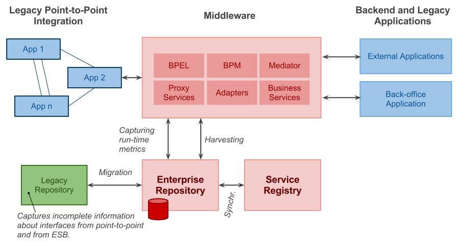
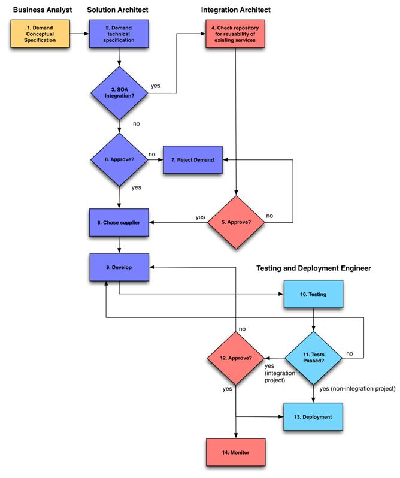
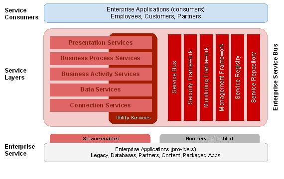
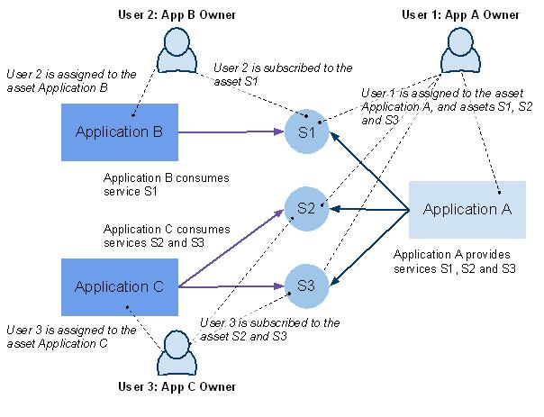
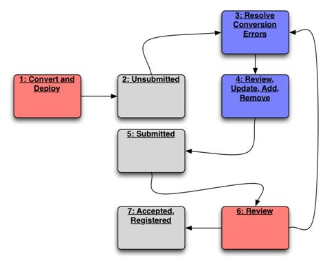
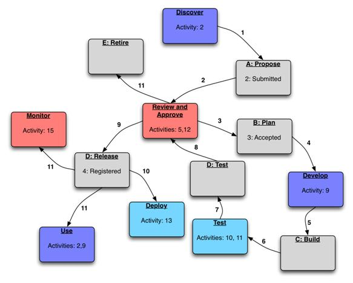

OUM |
Service-Oriented Architecture (SOA) Governance Implementation Supplemental Guide |
||
Method Navigation |
Current Page Navigation |
||
|
|
||||||||
This component contains OUM supplemental task guidance for SOA Governance Implementation.
The task guidelines in this document should be used to supplement the guidelines that appear in the OUM Task Overview.
In this task, you focus on documenting present organization structures – that is, all departments, roles and external organizations involved in development processes of applications and integration middleware that relate to SOA Governance. If available, use the Enterprise Diagnostic Information (ER.040).
For example, in an organization there may exist the following departments, roles and their responsibilities that relate to SOA Governance:
In this task, you create a diagram of an overall high-level view of the organization’s systems related to SOA Governance and an envisioned integration of SOA Governance tooling support. The purpose of this diagram is to gain an understanding of systems, applications or groups of applications that the SOA Governance should support.
For example, document existing major integration platforms together with their main functions and connections, major applications that either provide or consume services, integration styles such as point-to-point or enterprise service bus integration, and any existing repositories such as for documents or any other assets (services/interfaces). Such repositories may be available either online (for example, existing enterprise repository or service registry such as UDDI) and off-line (that is, manual service repository such as wiki pages, files, spreadsheets, etc.).

In this task, you further analyze requirements for any existing sources of information that you previously documented in the Technical Architecture Requirements and Strategy (TA.020) and that provide or contain information the organization’s assets. Take into account any existing middleware platforms and online or offline service repositories or registries. For example, identify a legacy repository in an Excel spreadsheet, existing middleware platform and a service registry with following requirements:
For each source of information, document:
For example, an organization may use an Excel spreadsheet with information about services and applications as follows:
In this task, you analyze and document the existing Domain Model of the organization’s SOA Governance assets. First, identify assets that the organization uses, such as, services, applications, environments, etc. For each asset, identify meta data that describe the asset and rules that define the integrity of the data. For example, in task CV.010 you discover that the organization uses an offline service repository in an Excel spreadsheet with information about services and applications that expose and/or consume services. Further, there is a Solution Architecture Department that owns every application, and there are rules that the owner of the repository must follow in order to keep the repository’s data consistent.
An example of meta data, rules and responsibilities for the service description follows. Note that this description reflects the current state of an example organization and is not necessarily the best practice for meta data description. There are two roles in this example, namely an application owner and a service owner. The application owner is a member of Solution Architecture Department (see the example in task RD.012) and the service owner is the application owner who owns the application that provides the respective service.
In this task, you document existing process models that are related to SOA Governance. You are interested in software development processes that the organization uses for development of applications and their integrations. Such processes may produce assets that are of interest to SOA Governance such as services, applications, frameworks, environments, design-patterns etc. Moreover, there might be other processes directly related to the organization’s current governance. For example, in task, Define Data Acquisition and Conversion Requirements (CV.010), you discovered that the organization uses an offline service repository and that a member of the Integration Architecture Department follows certain steps to make sure that the repository is up-to-date. In this task, you take into account the organization’s structures from the Present and Future Organization Structures (RD.012) and the Domain Model (RD.065).
An organization could use the following process to manage development of applications and their integrations. Note that this example uses roles as described in the task, Document Present and Future Organization Structures (RD.012).

Activities 1 through 14 are described below:
| No. | Activity Name | Description |
|---|---|---|
| 1. | Demand Conceptual Specification | Business analyst performs initial analysis of a demand and produces a conceptual design. |
| 2. | Demand Technical Specification | Solution architect analyzes the initial documentation produced by the business analyst. The solution architect produces technical specification for the development that includes specification of interfaces/services and other assets in case of integration. |
| 3. | SOA Integration? | If the development involves integration of two or more applications and the solution architect decides to follow the SOA integration style, he/she contacts the Integration Architecture team. The solution architect may also choose to follow the point-to-point integration and communicate with owners of involved applications directly. |
| 4. | Check Repository for Reusability of Existing Services | Integration architect performs an analysis of a technical specification such as he/she checks existing assets in the service repository for their reusability. |
| 5. | Approve? | Integration architect approves or rejects the integration. |
| 6. | Approve? | The solution architect approves or rejects the demand. |
| 7. | Reject Demand | |
| 8. | Choose Supplier | The solution architect chooses a supplier for implementation (external company or in-house development). |
| 9. | Develop | The solution architect monitors and checks the development. |
| 10. | Testing | When implementation is ready, the tester performs tests. |
| 11. | Tests Passed? | If tests fail, the tester requests reimplementation/fixing of any failed functionality (activity 9) otherwise it requests approval to deploy the integration. |
| 12. | Approve? | The integration architect approves or rejects the integration. When rejected, the development must correct any issues. |
| 13. | Deployment | The system administrator deploys the solution. |
| 14. | Monitor | Integration architect monitors the performance of integration. |
An organization could use following process to make sure that information in an offline service repository in an Excel spreadsheet is up-to-date.
In this task, you document requirements for SOA Governance. Take into account issues that you encounter when documenting the following:
By analyzing issues, you create a list of requirements.
For example, you may encounter following issues:
In this task, you prioritize the requirements identified from the Data Acquisition and Conversion Requirements (CV,010) and the Requirements Specification (RD.140), using the MoSCoW technique.
The role of SOA Governance, among other things, is to establish an enterprise-wide understanding of concepts and terms that all SOA projects use. In this task, you develop this glossary. Start with the Glossary in the SOA Governance Implementation Overview.
Typically, you implement SOA Governance support using an Enterprise Repository that already has pre-defined asset types that you can use out of the box. In addition, you may have the organization’s legacy repository and its structures to describe services and applications.
In this task, you design data structures for asset types, their relationships, categorizations of assets, various value lists, and users and roles.
Design data structures for asset types that will include the organization’s legacy repository and Enterprise Repository’s out-of-the-box structures. As an input, use the Domain Model (RD.065) and the documentation for the Enterprise Repository describing the asset types it supports. Make sure to follow the Enterprise Repository’s best practices for customizations.
Depending on your Enterprise Repository, you may adopt certain rules. For example, when you develop structures for asset types, you take respective Enterprise Repository structures as a starting point and make any customizations to it when necessary. Before you create any such customizations, try to map specific structures to structures provided by the Enterprise Repository. This allows you to limit the level of customizations, which in turn may help you to manage future upgrades of the Enterprise Repository software to newer versions.
As an example, you could create two asset types, namely Service and Application and two relationships as shown in the following figure. PP denotes a prefix you assign to the asset type that uniquely identifies the organization. This allows you to distinguish asset types that you customize with pre-defined asset types that you use out-of-the-box.

For every asset type, you should further specify structure. As noted above, take the Enterprise Repository structure as a starting point and add or remove specific properties according to your needs. Further, you should specify mapping rules to map from legacy repository’s structures to the new structures.
In order to help Enterprise Repository’s users to effectively search for assets, an Enterprise Repository typically provides a means to classify assets according to various “views.” For example, an Enterprise Repository may provide pre-defined views, such as, service layers that classify services according to client-server architectural view on the enterprise architecture, Line of Business (LOB) that classify assets based on the domain where assets operate (such as IT, financial, production, etc.). When designing categorization schemas for assets, you should start with pre-defined categorizations provided by the Enterprise Repository and add or modify any categorizations according to the organization’s needs.
One of the most important categorization schemas used to classify services are service layers. The following figure shows Oracle’s Enterprise Architecture Program (OEAP) that defines industry standards for service layers.

When you convert service descriptions from legacy service repository, you should also specify how you map information from this repository to new service layers.
When you migrate services from a legacy service repository, you may further specify rules that you apply when mapping information from this repository to new service layers. In other words, you should be able to identify available information in the legacy service repository to identify a service layer for services that you migrate. On the other hand, you may only be able to distinguish enterprise services and business activity services in your legacy service repository as there might not be any relevant information to distinguish between, for example, business activity services and presentation services. To illustrate, you could define following rules:
When you design asset types, you also specify users and their roles that define access rights for assets and responsibilities within the service lifecycle. Use the list of stakeholders from the Present and Future Organization Structures (RD.012) as a starting point for this task.
Consider the following example. Depending on your Enterprise Repository capabilities, you could define the following roles and their access rights:
Moreover, your Enterprise Repository may allow you to define at least two explicit relationships between a user and an asset namely assign and subscribe, and you should define the meaning of those relationships. For example, you can specify following rules:
The following figure further illustrates the above rules:

In this task, you design the SOA Governance processes that may include the migration process and service lifecycle process. The goal of this task is to make sure that the organization’s SOA Governance processes (i.e., processes you analyzed in task RD.030) are supported by the Enterprise Repository.
The processes described herein use the following color conventions.
When you design the service lifecycle process, use the development process from the Current Process Model (RD.030) as the input and define the states in which an asset can occur within this process. Using the development process example from RD.030 as the input, you could define the following service lifecycle states:
| State | Description |
|---|---|
A. Propose: |
An asset has been submitted for review. |
B. Plan: |
The proposed asset has been approved, the development is planned. |
C. Build: |
The asset has been built. |
D. Test: |
The asset has been tested. |
E. Release: |
The development of the asset passed tests, the implementation was approved and the asset is released in the production environment. |
F. Retire: |
The asset is retired and is no longer used. |
The Enterprise Repository should provide support for the service lifecycle process that uses the above states. For this purpose, the Enterprise Repository may use a built-in process for the asset management that may define built-in states as follows:
Note that the built-in process of the Enterprise Repository cannot usually be customized. The goal of the Behavior Design for SOA Governance is to implement development processes with defined service lifecycle states and to use the Enterprise Repository built-in process to support the service lifecycle.
The goal of the migration process is to move all assets from the legacy repository to a fully fledged Enterprise Repository and to make sure that all assets are valid and up-to-date. You can use the Enterprise Repository built-in process to manage the migration process. The following figure shows an example of this process depicted as a Control State Diagram that defines the activities of the migration process together with the Enterprise Repository built-in states.

The following describes the activities in the above process:
The goal of the service lifecycle process is to manage the lifecycle of assets with help of the Enterprise Repository. In particular, you take the development process the Current Process Model (RD.030) as the input and you use the Enterprise Repository’s built-in states and workflows to support this process.
The following figure (and subsequent activity description) shows how the Enterprise Repository supports the development process example from RD.030:

When you design the service lifecycle process and the applicable Enterprise Repository support, you should clarify the valid combination of service lifecycle states and built-in states. The following table shows example combinations of states that may occur during the migration and service lifecycle processes.
| Lifecycle State(s) | Built-In State | Description |
|---|---|---|
Propose |
Submitted | Solution architect proposed as asset. |
Plan |
Accepted | The accepted asset by the registrar is being planned to be developed. |
Build |
Accepted | The accepted asset by the registrar was built. |
Test |
Accepted | The accepted asset by the registrar was tested. |
Release |
Registered | The asset was released and registered by the registrar. |
Retire |
Registered | The asset was retired; however, it can be reused. |
Propose, Release |
Accepted | This is an invalid combination of states. |
Propose, Plan, Build, Test |
Registered | This is an invalid combination of states. |
Propose, Plan, Build, Test, Release, Retire |
Unsubmitted | Asset created as a result of conversion. The asset awaits review by the asset owner. |
Propose, Plan, Build, Test, Release, Retire |
Submitted | Asset owner reviewed the asset after conversion. |
When you design the Domain Model (RD.065) and processes around that model (RD.030), you should clarify the rules that determine your Enterprise Repository’s consistent state.
Once again using the development process example from RD.030, you could create the following business rules:
Every application must provide at least one service and vice-versa and all provided and consumed asset services must be of the type PP Service.
Every application must provide at least one service and vice-versa.
Every SOAP service must have a valid WSDL defined. Both the WSDL must be a valid URL and HTTP GET must obtain the WSDL document.
Every application must have a user responsible for it. The user comes from a department that owns the application.
The way you implement the business rules depends on your Enterprise Repository technology. For example, an Enterprise Repository that allows you to develop a custom meta model for asset types may not directly enforce users to provide valid data. In particular, if a user does not know the data to provide for an asset description, the user is allowed to leave the data blank. Moreover, meta data structures in the Enterprise Repository may not allow you to define any hard cross-asset rules. For example, it might not be possible to define cardinality constraint rules between an application asset and a service asset such that the application must always provide at least one service (in this case, the structures may exist in the Enterprise Repository meta model thus such constraints cannot be enforced by means of the database cardinality constraints).
Depending on your Enterprise Repository technology, you should determine how the business rules will be ensured. For example, you may create automated reports that check for the Enterprise Repository’s consistency and generate warnings, or you use Enterprise Repository’s extensions that allow you to automate and customize workflows.
In this task, you design conversion components in order to populate the Enterprise Repository with existing assets available in the organization’s environment. The conversion components should cover:
Define components and a process to perform conversion. This is where you describe the activity of the migration process (see task, DS.100 Design Behavior – Migration Process). When you design the components and the process, you should:
Note that the conversion components are used to run a conversion process. Typically, you perform this process in conjunction with a development process of the Enterprise Repository database in which you design asset structures. Use Enterprise Repository tools to create such structures. You should then export the structures from the repository so that you can later use them in the conversion process as the structure for the target database.
Consider designing the following conversion components:
As noted earlier, you may iteratively build the target database by performing development and conversion until you reach the state when all data from the legacy repository is converted to the Enterprise Repository. After that, perform the additional activities of the migration process as described in the Migration Process section of task, Design Behavior (DS.100).
In this task you design components for harvesting of assets from running middleware in your environment. When you design components for harvesting, perform the following steps:
1. Reuse any components that your Enterprise Repository may provide as solution packs for harvesting of assets from supported middleware platforms.
2. Develop new components, if necessary, or extend existing ones.
3. Determine sources of information from which to harvest the assets, such as, version control repositories (e.g., SVN, CVS), middleware project files, running middleware’s meta data databases, etc.
4. Define configurations, including locations of sources, credentials that the harvester will use to connect to the source, a frequency of running the harvester, subsets of assets to be harvested, etc.
SOA Governance should define all important structures and processes for effective governance of the SOA Implementation projects in the organization. However, it is important to note that in order to be successful and widely adopted in the organization; the processes must be implemented and followed by the appropriate departments and their staff members. The departments’ staff members should be trained on how to use the Enterprise Repository as well as in the Governance processes.
When your SOA Governance Implementation project also uses Enterprise Repository to perform migration from the legacy repository to the new Enterprise Repository see (the Migration Process section of task, Design Behavior (DS.100), it may be useful to plan at lest two training workshops as follows:
In the first workshop, users should become familiar with the Enterprise Repository concepts, its specific structures and the processes developed for SOA Governance in your organization. The agenda for this workshop should cover following topics:
The workshop should first give an introduction to SOA Governance in general, train staff members on the basics of the Enterprise Repository functionality. Further, the workshop should give details on the SOA Governance project in the organization, explain the major processes and then in detail show the migration process. Users should get hands-on training on how to work within the migration process to resolve the issues that occur during the migration. They should receive enough knowledge to be able to finish the process after the workshop.
In the second workshop, users should become familiar with service lifecycle process and train with a scenario in which they develop services, register them as assets and reuse them in development processes of applications. In addition, the trainer should verify whether users understood the migration process from Workshop 1 and discuss any issues they might have with the Enterprise Repository or any processes.
In this task, you develop any learning materials for the workshops defined in task, Develop User Training Plan (TR.070). The materials may include presentations and materials for labs as follows:
In this task, you should design the technical requirements, processes and technologies for the testing and production environments to run SOA Governance processes in the organization.
When designing the Technical Architecture, consider the following points:
In this task, you define any reports required for SOA Governance. In particular, you may define two kinds of reports: operation reports and decisions support reports.
Operation reports are required for daily operation of the business. They may also facilitate your migration processes and may include information on the number of warnings or errors generated from the migration process that need to be resolved by owners of assets. Decision support reports, on the other hand, facilitate the business through measurements and prediction of business performance. The Enterprise Repository may already include a set of pre-defined decision support and operational reports that you should further adjust to the organization`s needs.

Copyright © 2006, 2016, Oracle and/or its affiliates. All rights reserved.